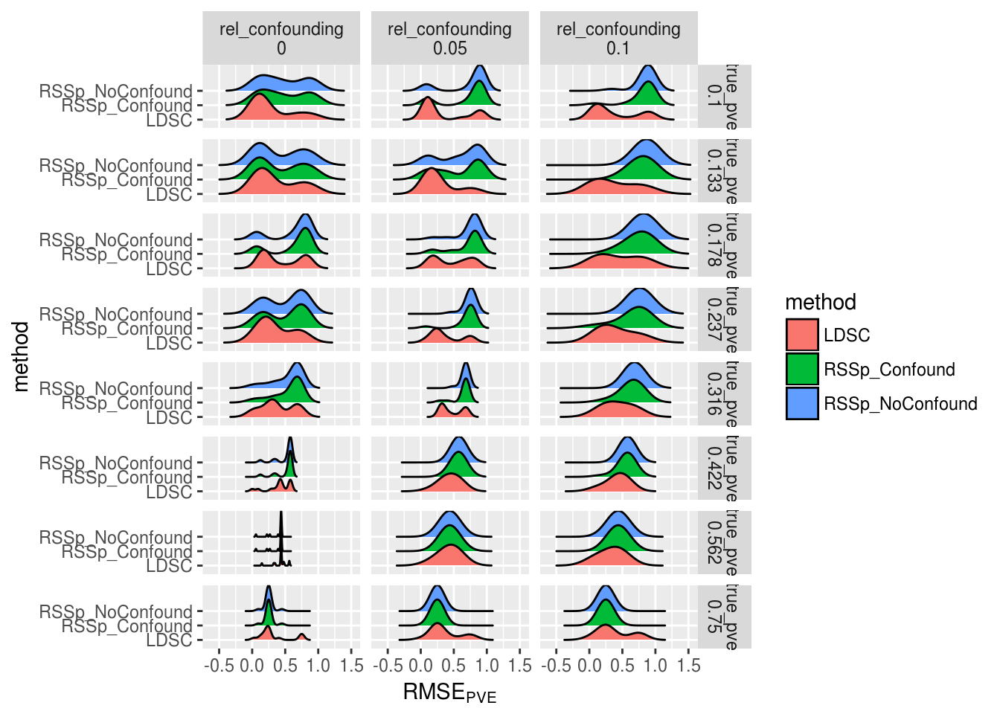
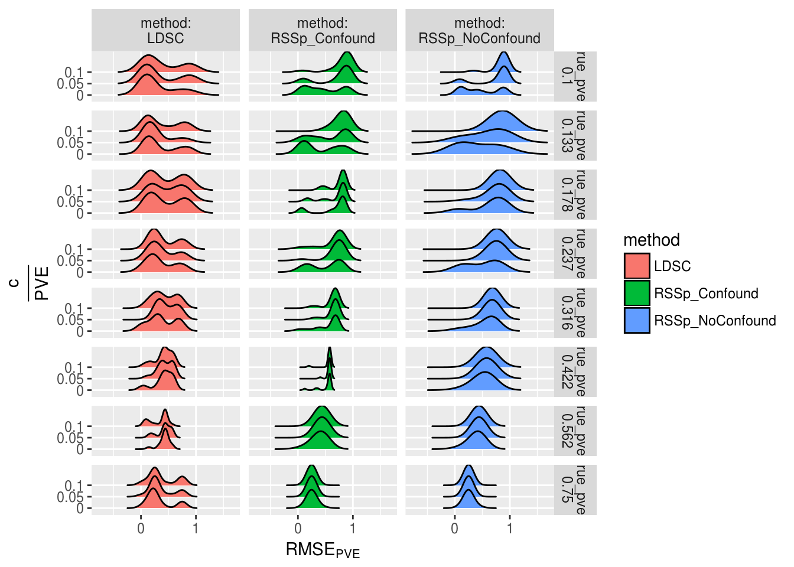
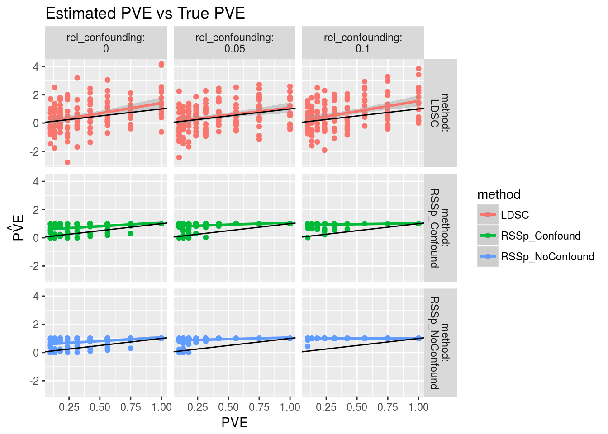

RSSp vs ldsc (High PVE)
Nicholas Knoblauch
2017-11-08
Last updated: 2017-11-28
Code version: cd8ca01
Simulation
GWAS summary stats
The loci used in the simulation consisted of the 844500 SNPs that formed the intersection of
Genotype data came from ~ 450 Europeans in 1kg (1 thousand genomes). \(\hat{\textbf{u}}\) was simulated using the method outlined here. \(PVE\) took on 9 values between from \(0.09999\) to \(0.9999\). Confounding was simulated as a proportion of total \(PVE\), and took on one of three values: \(0\),\(0.05\),\(0.1\). Each scenario was replicated 15 times.
LD
LDshrink was used to estimate \(LD\) for the same 450 individuals from 1kg. Haplotypes, rather than genotypes were used, and a genetic map was also used. pre-published ldetect breakpoints were used so that the LD matrix could be approximated as block-diagional (blocks are not of equal size)
Loci
Loci for this simulation were chosen by taking the intersection of: * Loci typed (or imputed) from the 1kg reference panel * Loci for which there was a genetic map value * Loci that fell within ldetect break points * Loci included in the LD score regression example GWAS data
This ended up being 844501 SNPs in total.
Methods
RSSpone parameter model. (No confounding parameter)RSSptwo paramter model.- LD score regression (
LDSC)
The first result I want to highlight is just the relative performance of the three methods: LDSC, RSSp with a confounding parameter (RSSp_Confound), and RSSp without a confounding parameter (RSSp_NoConfound). “Performance” here means the RMSE of PVE abs(pve-true_pve) In these simulations there is no confounding. NB: Because RSSp bounds PVE between 0 and 1, I have bounded LDSC estimates between 0 and 1 for the purpose of comparing RMSE between methods.
Next we see the simulation results that had a confounding parameter. Here I’ve split up the results using the variable rel_confounding, which is the level of true confounding divided by the true \(PVE\).
The next several plots show the same data as the box plots, (RMSE of PVE across methods,levels of counfounding, and true PVE), but are rearranged in several different ways, to make particular comparisons easier. (e.g how does the RSSp_Confound method perform as confounding increases at a given PVE). If it looks like RMSE is less than 0 or greater than one, that is simply an artifact of the plotting


This plot shows estimates of \(PVE\) vs the true value, In this plot I have not truncated \(LDSC\) between 0 and 1.


Session information
R version 3.4.2 (2017-09-28)
Platform: x86_64-pc-linux-gnu (64-bit)
Running under: Ubuntu 16.04.3 LTS
Matrix products: default
BLAS/LAPACK: /opt/intel/compilers_and_libraries_2018.0.128/linux/mkl/lib/intel64_lin/libmkl_intel_lp64.so
locale:
[1] LC_CTYPE=en_US.UTF-8 LC_NUMERIC=C
[3] LC_TIME=en_US.UTF-8 LC_COLLATE=en_US.UTF-8
[5] LC_MONETARY=en_US.UTF-8 LC_MESSAGES=en_US.UTF-8
[7] LC_PAPER=en_US.UTF-8 LC_NAME=C
[9] LC_ADDRESS=C LC_TELEPHONE=C
[11] LC_MEASUREMENT=en_US.UTF-8 LC_IDENTIFICATION=C
attached base packages:
[1] stats graphics grDevices utils datasets methods base
other attached packages:
[1] ggjoy_0.3.0 bindrcpp_0.2 RSSp_0.9 dplyr_0.7.4
[5] purrr_0.2.4 readr_1.1.1 tidyr_0.7.2 tibble_1.3.4
[9] ggplot2_2.2.1 tidyverse_1.1.1
loaded via a namespace (and not attached):
[1] Rcpp_0.12.13 cellranger_1.1.0 compiler_3.4.2
[4] git2r_0.19.0 plyr_1.8.4 bindr_0.1
[7] forcats_0.2.0 tools_3.4.2 digest_0.6.12
[10] lubridate_1.6.0 jsonlite_1.5 evaluate_0.10.1
[13] nlme_3.1-131 gtable_0.2.0 lattice_0.20-35
[16] pkgconfig_2.0.1 rlang_0.1.4 Matrix_1.2-11
[19] psych_1.7.5 yaml_2.1.14 parallel_3.4.2
[22] haven_1.1.0 xml2_1.1.9000 httr_1.3.1
[25] stringr_1.2.0 knitr_1.17 hms_0.3
[28] rprojroot_1.2 grid_3.4.2 glue_1.2.0
[31] R6_2.2.2 readxl_1.0.0 foreign_0.8-69
[34] rmarkdown_1.7 modelr_0.1.1 reshape2_1.4.2
[37] magrittr_1.5 backports_1.1.0 scales_0.5.0
[40] htmltools_0.3.6 rvest_0.3.2 assertthat_0.2.0
[43] mnormt_1.5-5 colorspace_1.3-2 labeling_0.3
[46] stringi_1.1.5 lazyeval_0.2.1 munsell_0.4.3
[49] broom_0.4.2 RcppEigen_0.3.3.3.0This R Markdown site was created with workflowr